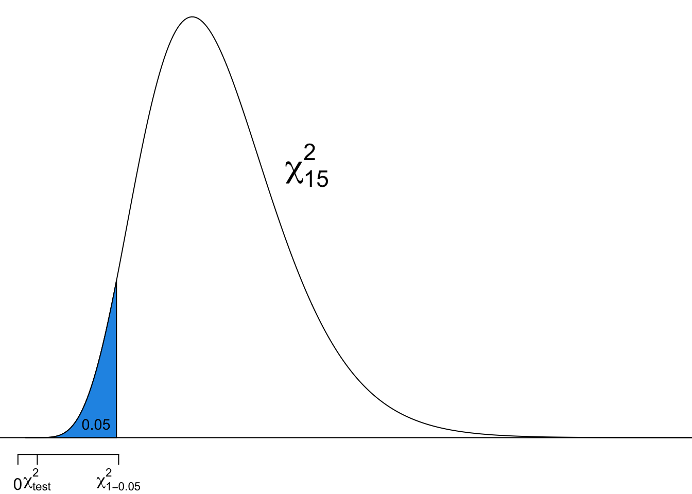
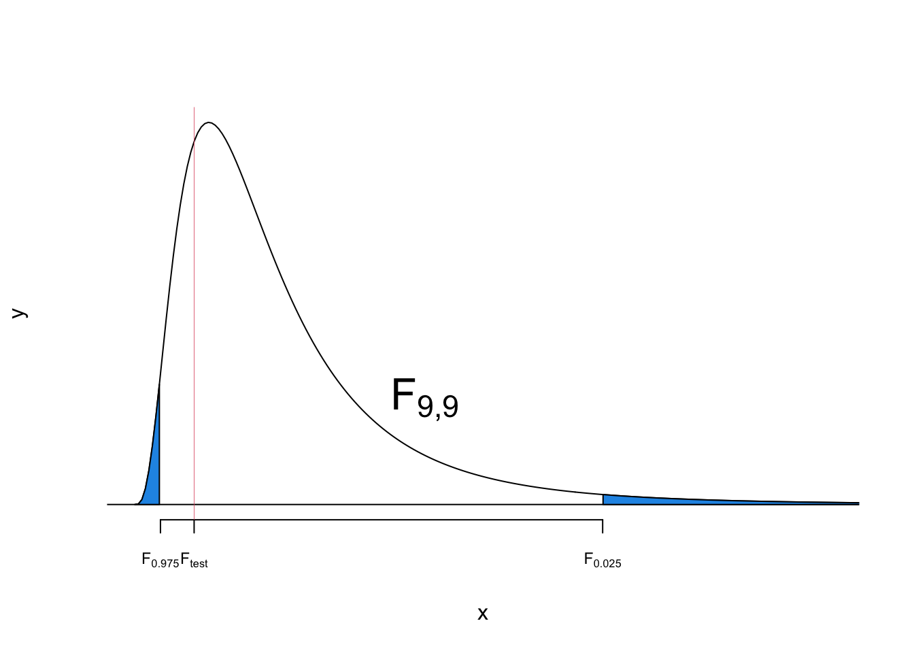
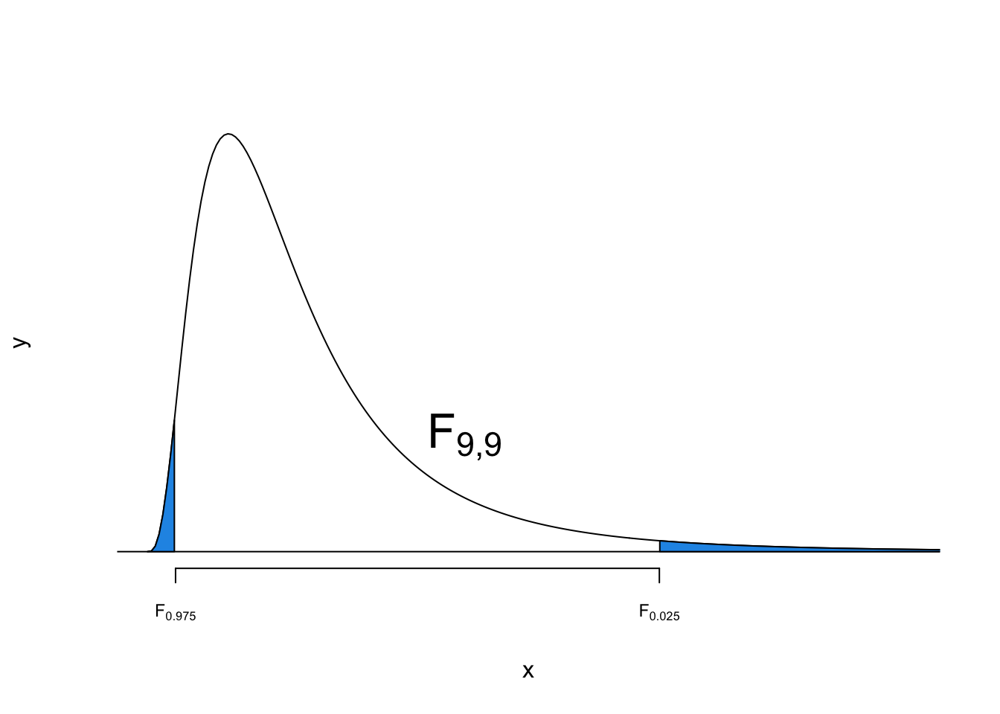

17 Inference About Variances
17.1 Inference for One Population Variance
Why Inference for Population Variances?
- We want to know if \(\sigma_1 = \sigma_2\), because the method we use depends on whether or not this is true.
- The variation in potency of drugs: affects patients’ health

- The variance of stock prices : the higher the variance, the riskier the investment

Inference for Population Variances
- The sample variance \(S^2 = \frac{\sum_{i=1}^n(X_i - \overline{X})^2}{n-1}\) is our point estimator for the population variance, \(\sigma^2\).
-
\(S^2\) is an unbiased estimator for \(\sigma^2\).
- This means \(E(S^2) = \sigma^2\).
- The inference methods for \(\sigma^2\) require the population to be normal.
- The inference methods can work poorly if normality is violated, even if the sample is large.

Chi-Square \(\chi^2\) Distribution
- The inference for \(\sigma^2\) involves the so called \(\chi^2\) distribution.
- Parameter: degrees of freedom \(df\)
- Right-skewed distribution
- Defined over positive numbers
- More symmetric as \(df\) gets larger
- Chi-Square Distribution

Upper Tail and Lower Tail of Chi-Square
- \(\chi^2_{\frac{\alpha}{2},\, df}\) has area to the right of \(\alpha/2\).
- \(\chi^2_{1-\frac{\alpha}{2},\, df}\) has area to the left of \(\alpha/2\).
- In \(N(0, 1)\), \(z_{1-\frac{\alpha}{2}} = -z_{\frac{\alpha}{2}}\), but \(\chi^2_{1-\frac{\alpha}{2},\,df} \ne -\chi^2_{\frac{\alpha}{2},\,df}\).

Sampling Distribution
When a random sample of size \(n\) is from \(\color{red}{N(\mu, \sigma^2)}\), \[ \frac{(n-1)S^2}{\sigma^2} \sim \chi^2_{n-1} \]
Reminder: The inference method for \(\sigma^2\) introduced here can work poorly if the normality assumption is violated, even for large samples.
\((1-\alpha)100\%\) Confidence Interval for \(\sigma^2\)
- The \((1-\alpha)100\%\) confidence interval for \(\sigma^2\) is \[\color{blue}{\boxed{\left( \frac{(n-1)S^2}{\chi^2_{\frac{\alpha}{2}, \, n-1}}, \frac{(n-1)S^2}{\chi^2_{1-\frac{\alpha}{2}, \, n-1}} \right)}}\]
- The CI for \(\sigma^2\) cannot be expressed as \((S^2-m, S^2+m)\) anymore!
Example: Supermodel Heights
- Listed below are heights (cm) for the simple random sample of 16 female supermodels.
heights <- c(178, 177, 176, 174, 175, 178, 175, 178,
178, 177, 180, 176, 180, 178, 180, 176)- The supermodels’ heights are normally distributed.
- Construct a \(95\%\) confidence interval for population standard deviation \(\sigma\).

- \(n = 16\), \(s^2 = 3.4\), \(\alpha = 0.05\).
- \(\chi^2_{\alpha/2, n-1} = \chi^2_{0.025, 15} = 27.49\)
- \(\chi^2_{1-\alpha/2, n-1} = \chi^2_{0.975, 15} = 6.26\)
- The \(95\%\) CI for \(\sigma\) is \(\small \left( \sqrt{\frac{(n-1)s^2}{\chi^2_{\frac{\alpha}{2}, \, n-1}}}, \sqrt{\frac{(n-1)s^2}{\chi^2_{1-\frac{\alpha}{2}, \, n-1}}} \right) = \left( \sqrt{\frac{(16-1)(3.4)}{27.49}}, \sqrt{\frac{(16-1)(3.4)}{6.26}}\right) = (1.36, 2.85)\)
Computation in R
n <- 16
s2 <- var(heights)
alpha <- 0.05
## two chi-square critical values
chi2_right <- qchisq(alpha/2, n - 1, lower.tail = FALSE)
chi2_left <- qchisq(alpha/2, n - 1, lower.tail = TRUE)
## two bounds of CI for sigma2
ci_sig2_lower <- (n - 1) * s2 / chi2_right
ci_sig2_upper <- (n - 1) * s2 / chi2_left
## two bounds of CI for sigma
(ci_sig_lower <- sqrt(ci_sig2_lower))[1] 1.362104(ci_sig_upper <- sqrt(ci_sig2_upper))[1] 2.853802Testing
- Use \(\alpha = 0.05\) to test the claim that “supermodels have heights with a standard deviation that is less than the standard deviation, \(\sigma = 7.5\) cm, for the population of women”.
Step 1
- \(H_0: \sigma = \sigma_0\) vs. \(H_1: \sigma < \sigma_0\), where \(\sigma_0 = 7.5\) cm.
Step 2
- \(\alpha = 0.05\)
Step 3
- Under \(H_0\), \(\chi_{test}^2 = \frac{(n-1)s^2}{\sigma_0^2} = \frac{(16-1)(3.4)}{7.5^2} = 0.91\), drawn from \(\chi^2_{n-1}\).
Step 4-c
- This is a left-tailed test.
- The critical value is \(\chi_{1-\alpha, df}^2 = \chi_{0.95, 15}^2 = 7.26\)
Step 5-c
- Reject \(H_0\) in favor of \(H_1\) if \(\chi_{test}^2 < \chi_{1-\alpha, df}^2\).
- Since \(0.91 < 7.26\), we reject \(H_0\).
Step 6
- There is sufficient evidence to support the claim that supermodels have heights with a SD that is less than the SD for the population of all women.

- We conclude that the heights of supermodels vary less than heights of women in the general population.
Back to Pooled t-Test
- In a pooled t-test, we assume
- \(n_1 \ge 30\) and \(n_2 \ge 30\) or that both samples are drawn from normal populations.
- \(\sigma_1 = \sigma_2\)
- We can use a QQ-plot (and normality tests, Anderson, Shapiro, etc.) to check the assumption of a normal distribution.
- We will now learn how to check the assumption \(\sigma_1 = \sigma_2\).
17.2 Inference for Comparing Two Population Variances
F Distribution
- We use the \(F\) distribution for inference about two population variances.
- Two parameters: \(df_1\), \(df_2\)
- Right-skewed distribution
- Defined over positive numbers
- R Shiny app: F Distribution

Upper and Lower Tail of F Distribution
- We denote \(F_{\alpha, \, df_1, \, df_2}\) as the \(F\) quantile such that \(P(F_{df_1, df_2} > F_{\alpha, \, df_1, \, df_2}) = \alpha\).

- When random samples of sizes \(n_1\) and \(n_2\) have been independently drawn from two normally distributed populations, \(N(\mu_1, \sigma_1^2)\) and \(N(\mu_2, \sigma_2^2)\), the ratio \[\frac{s_1^2/s_2^2}{\sigma_1^2/\sigma_2^2} \sim F_{n_1-1, \, n_2-1}\]
\((1-\alpha)100\%\) Confidence Interval for \(\sigma_1^2 / \sigma_2^2\)
- The \((1-\alpha)100\%\) confidence interval for \(\sigma_1^2 / \sigma_2^2\) is \[\color{blue}{\boxed{\left( \frac{s_1^2/s_2^2}{F_{\alpha/2, \, n_1 - 1, \, n_2 - 1}}, \frac{s_1^2/s_2^2}{F_{1-\alpha/2, \, \, n_1 - 1, \, n_2 - 1}} \right)}}\]
- The CI for \(\sigma_1^2 / \sigma_2^2\) cannot be expressed as \(\left(\frac{s_1^2}{s_2^2}-m, \frac{s_1^2}{s_2^2} + m\right)\) anymore!
F test for comparing \(\sigma_1^2\) and \(\sigma_2^2\)
Step 1
- Right-tailed: \(\small \begin{align} &H_0: \sigma_1 \le \sigma_2 \\ &H_1: \sigma_1 > \sigma_2 \end{align}\)
- Two-tailed: \(\small \begin{align} &H_0: \sigma_1 = \sigma_2 \\ &H_1: \sigma_1 \ne \sigma_2 \end{align}\)
Step 2
- \(\alpha = 0.05\)
Step 3
- Under \(H_0\), \(\sigma_1 = \sigma_2\), and the test statistic is \[\small F_{test} = \frac{s_1^2/s_2^2}{\sigma_1^2/\sigma_2^2} = \frac{s_1^2}{s_2^2} \sim F_{n_1-1, \, n_2-1}\]
Step 4-c
- Right-tailed: \(F_{\alpha, \, n_1-1, \, n_2-1}\) .
- Two-tailed: \(F_{\alpha/2, \, n_1-1, \, n_2-1}\) or \(F_{1-\alpha/2, \, n_1-1, \, n_2-1}\)
Step 5-c
- Right-tailed: reject \(H_0\) if \(F_{test} \ge F_{\alpha, \, n_1-1, \, n_2-1}\).
- Two-tailed: reject \(H_0\) if \(F_{test} \ge F_{\alpha/2, \, n_1-1, \, n_2-1}\) or \(F_{test} \le F_{1-\alpha/2, \, n_1-1, \, n_2-1}\)
Example: Weight Loss
- A study was conducted to see the effectiveness of a weight loss program.
- Two groups (Control and Experimental) of 10 subjects were selected.
- The two populations are normally distributed and have the same SD.

- The data on weight loss was collected at the end of six months.
- Control: \(n_1 = 10\), \(\overline{x}_1 = 2.1\, lb\), \(s_1 = 0.5\, lb\)
- Experimental: \(n_2 = 10\), \(\overline{x}_2 = 4.2\, lb\), \(s_2 = 0.7\, lb\)
- Assumptions:
- \(\sigma_1 = \sigma_2\)
- The weight loss for both groups are normally distributed.
Check if \(\sigma_1 = \sigma_2\)
- \(n_1 = 10\), \(s_1 = 0.5 \, lb\)
- \(n_2 = 10\), \(s_2 = 0.7 \, lb\)
Step 1
- \(\begin{align} &H_0: \sigma_1 = \sigma_2 \\ &H_1: \sigma_1 \ne \sigma_2 \end{align}\)
Step 2
- \(\alpha = 0.05\)
Step 3
- The test statistic is \(F_{test} = \frac{s_1^2}{s_2^2} = \frac{0.5^2}{0.7^2} = 0.51\).
Step 4-c
- This is a two-tailed test.
- The critical value is \(F_{0.05/2, \, 10-1, \, 10-1} = 4.03\) or \(F_{1-0.05/2, \, 10-1, \, 10-1} = 0.25\).

Step 5-c
- Is \(F_{test} > 4.03\) or \(F_{test} < 0.25\)?
- No.
Step 6
- The evidence is not sufficient to reject the claim that \(\sigma_1 = \sigma_2\).
95% CI for \(\sigma_1^2 / \sigma_2^2\)
- \(\small F_{\alpha/2, \, df_1, \, df_2} = F_{0.05/2, \, 10-1, \, 10-1} = 4.03\)
- \(\small F_{1-\alpha/2, \, df_1, \, df_2} = F_{1-0.05/2, \, 10-1, \, 10-1} = 0.25\)
- \(\small \frac{s_1^2}{s_2^2} = \frac{0.5^2}{0.7^2} = 0.51\)
- The 95% CI for \(\sigma_1^2 / \sigma_2^2\) is \[\small \begin{align} &\left( \frac{s_1^2/s_2^2}{F_{\alpha/2, \, df_1, \, df_2}}, \frac{s_1^2/s_2^2}{F_{1-\alpha/2, \, df_1, \, df_2}} \right) \\ &= \left( \frac{0.51}{4.03}, \frac{0.51}{0.25} \right) = \left(0.127, 2.04\right)\end{align}\]

- We are 95% confident that the ratio \(\sigma_1^2 / \sigma_2^2\) is between 0.127 and 2.04.
- Because 1 is included in this interval, it leads to the same conclusion as the F test.
Implementing F-test in R
n1 <- 10; n2 <- 10
s1 <- 0.5; s2 <- 0.7
alpha <- 0.05
## 95% CI for sigma_1^2 / sigma_2^2
f_small <- qf(p = alpha / 2,
df1 = n1 - 1, df2 = n2 - 1,
lower.tail = TRUE)
f_big <- qf(p = alpha / 2,
df1 = n1 - 1, df2 = n2 - 1,
lower.tail = FALSE)
## lower bound
(s1 ^ 2 / s2 ^ 2) / f_big[1] 0.1267275## upper bound
(s1 ^ 2 / s2 ^ 2) / f_small[1] 2.054079## Testing sigma_1 = sigma_2
(test_stats <- s1 ^ 2 / s2 ^ 2)[1] 0.5102041(cri_val_big <- qf(p = alpha/2,
df1 = n1 - 1,
df2 = n2 - 1,
lower.tail = FALSE))[1] 4.025994(cri_val_small <- qf(p = alpha/2,
df1 = n1 - 1,
df2 = n2 - 1,
lower.tail = TRUE))[1] 0.2483859# var.test(x, y, alternative = "two.sided")17.3 Exercises
- The data about male and female pulse rates are summarized below.
- Construct a 95% CI for \(\sigma_{male}\) of pulse rates for males.
- Construct a 95% CI for \(\sigma_{male}/\sigma_{female}\).
- Does it appear that the population standard deviations for males and females are different? Why or why not?
| Male | Female | |
|---|---|---|
| \(\overline{x}\) | 71 | 75 |
| \(s\) | 9 | 12 |
| \(n\) | 14 | 12 |